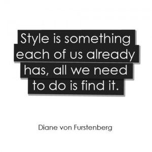

VintageRework Galway

A little bit about us...
Based in the heart of Galway city, Vintage Rework first opened it's doors in 1999 and has since
been a haven for vintage shoppers from all over the country. Selling the best re-worked vintage
clothing, shoes and accesories at the best prices. With a only small number of staff, we work very hard to
make sure our customers find the best pieces to suit their individual style. Even if it's just to
have a browse, we'll make sure your experience is a pleasant one.

A little bit about our staff...
John Murphy
- Job Description: Store Manager
- Roles:
- recruiting, training and supervising staff
- overseeing pricing and stock control
- dealing with customer queries and complaints
Sarah Walsh
- Job Description: Visual Merchandiser
- Roles:
- gathering information on customers' reactions to products
- analysing every aspect of our bestsellers (for example, the bestselling price points, colours or styles) and ensuring that they reach their full potential
- researching costs and working within a budget
Rebecca Croke, Anna Brennan and Sinead Bedford
- Job Description: Sales Assistants
- Roles:
- welcome and advise customers
- handle payments
- keep the shop floor clean and tidy